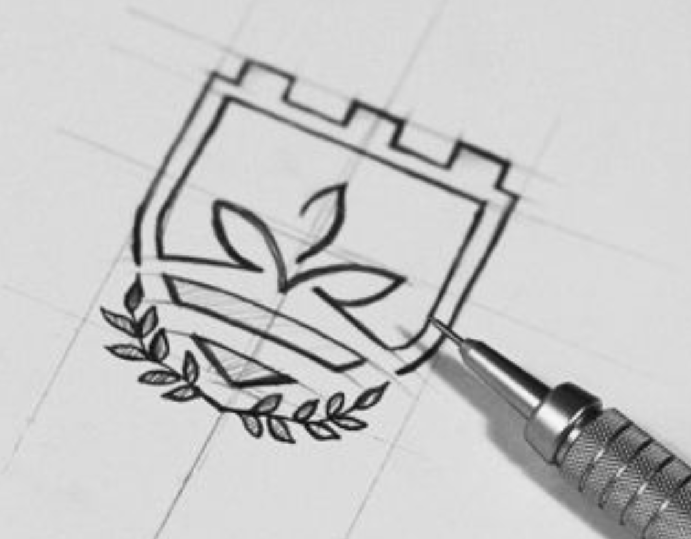

What You’ll Need
- Pencil and paper
- A design software
- Sticky notes
Tips
- Keep it simple.
- Use consistent spacing.
- Test multiple variations.
Be Careful of
- copying or trac existing logos.
- Avoid using too many colours.
Here we go!
Define your brand identity
Think about the message you want your logo to communicate. This will guide all your design decisions. Write down adjectives that align with your brand e.g. modern or creative!
Gather inspiration!
Look at Pinterest or Dribbble to see some styles you like. Save any ideas that stand out to you. Remember that you are only gathering inspo, not stealing ideas!
Choose your colour palette
Select 3 colours that match your brand's tone from the adjectives we chose earlier. Simple colour palettes are the most effective. Have a look at Adobe colours!
Pick a typeface!
This is where things get fun. The font you choose sets the personality of your logo. Sans-serif is modern, serif is traditional but go crazy!
Sketch your ideas
Use those drawing skills! Draw rough shapes or letter concepts on paper. Try multiple versions without worrying about perfection. The more sketches the better.
Create your logo digitally
Use Illustrator, Figma, Canva, or other design softwares (there are plenty of free options too!) to bring your sketch into a clean digital version.
Test your logo
Check how it looks at small sizes and in black & white to ensure it's clear and recognisable. Feel free to go back into your design software to make any changes after this step.
Export your logo files once you're happy!
Save your design as a PNG and a PDF so you can use it across print and social media. Good job!